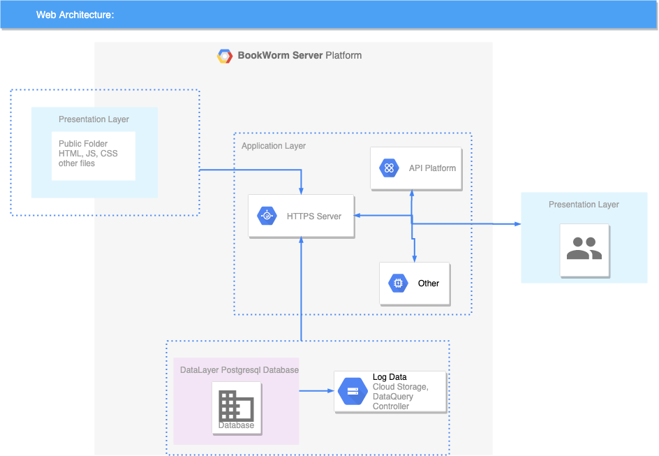
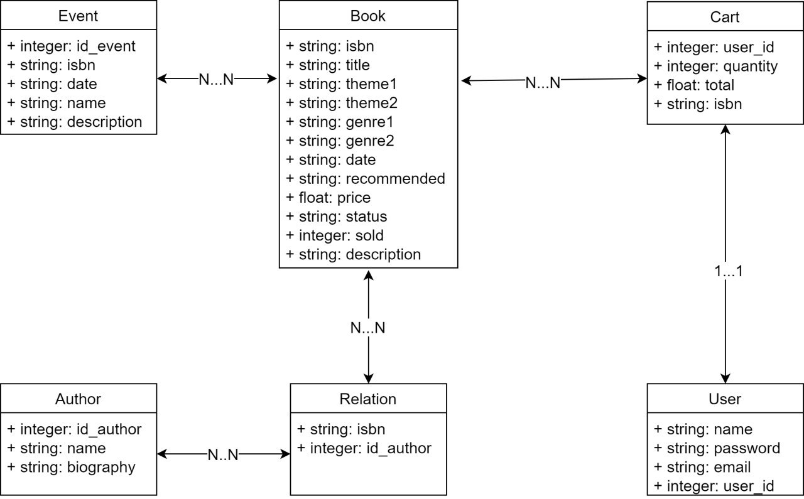

Backend Documentation
Deliverable D1
General group information
Member N.
Role
First Name
Last Name
ID Number
Email Address
1
Administrator
Marco
Buratti
845766
marco1.buratti@mail.polimi.it
2
Member
Christian
Cammareri
920915
christian.cammareri@mail.polimi.it
3
Member
Sergio
Canzoneri
920187
sergio.canzoneri@mail.polimi.it
Links to other deliverables
Deliverable D0: The web application is reachable at this: address
Deliverable D2: The YAML file containing the specification of the appAPI can be found at this: address
Deliverable D3: The SwaggerUI page of the same API is available at this: address
Deliverable D4: The source code of D0 is available as a zip file at this: address
Deliverable D5: The address of the online source code repository is available at this: address
We hereby declare that this is a private repository and, upon request, we will give access to the
instructors.
Web Architecture

The Web server is based on an application generated by Swagger.io, we have chosen a Node.js server with a Connect
module.
The user (Presentation Layer) executes html requests to the server that responds with the contents of the
Public folder. These files do not contain code that runs on the server side, so they are all considered user
files. Folders contain only static files that are sent to the user's browser and are rendered locally. The
dynamic parts of the html pages are delegated to JavaScript files.
The RestAPIs (API Platform) are managed by the index.js file that is appointed to keep the server online
and manage data traffic. Through DataLayer and Knex the server is able to forward requests to the database
and respond to users.
In the "Other" field, there are all the files related to the cookie session. Cookies are set by the server
to the clients in such a way that users can buy and browse the web page without having to enter their credentials every
time.
API
REST compliance
We have decided to follow these guidelines: the RESTs are driven by input parameters which are carried to the
server by the requests.
OpenAPI Resource models
Data model

The database consists of six tables, four of which are used to represent and manage the books, authors and
events entities( Book, Relation, Author and Event), whereas the others two are dedicated to manage users'
data (User and Cart).
The main tables Author, Event and Book contain all the information to be shown on the front-end side in the
respective single-pages. Event and Book are linked through the isbn parameter, whereas the relationship between
Authors and Books passes through the Relation table. This simple table consisting of only two columns (isbn,
id_author) has the task of associating each book with its author/authors and viceversa (in the delivery
documents it was indicated that a book could have up to four authors, but our solution works with N
authors). Furthermore, with regards to the cardinality of genres and themes of the available books.
We have fixed the number of themes and genres associated with one book to at most 2 in order to keep our database
as simple as possible, even though we could have used the same solution adopted for the authors.
The other two tables (User and Cart) are related to users management: in particular, the User table contains
information (names, mails, passwords) about registered users, whereas the Cart, with the id_user as primary key, is
made up of rows, each one representing a different book in the user's cart (each row is identified by the couple (id_user,isbn)
and specifies the quantity and the total cost of the selected book). It should be emphasized that at most N rows could be
associated with each user, with N indicating the number of distinct books in the user's cart.
We have used VisualStudio Code as an IDE to develop our site and we have generated a server by using
swagger.io.
The server is entirely written in JavaScript with the help of knex.js to generate the database and to fill
it
up. The server source code is generated from a nodejs-server application.
As an interface to the DB we used pgAdmin4 and MySQL. The following JS tools have been used:
body-parser": "^1.18.3", "connect": "^3.2.0","cookie-parser": "^1.4.4", "cookie-session": "^1.3.3",
"js-yaml":
"^3.3.0", "knex": "^0.14.6", "lodash": "^4.17.10", "pg": "^7.11.0", "process": "^0.11.10", "serve-static":
"^1.14.0", "swagger-tools": "^0.10.4".
Discussion
-
How did you make sure your web application adheres to the provided OpenAPI
specification?
Having generated the code through Swagger Editor and having defined the REST API from the yaml file we then
built the database on this generated code.
- Why do you think your web application adheres to common practices to partition the web application (static
assets vs. application data)?
We have followed the guidelines of the slides shown in class to organize the paths of folders and files.
The Server is organized in such a way as to have all the static documents in a single folder accessible from
the HTML files. The dynamic components are all saved on the database that can be accessed by QuerySQL.
- Describe synthetically why and how did you manage session state, what are the
state change triggering actions (e.g., POST to login etc..).
The functions that modify the database status are those related to the user. User/login, User/register,
Cart/insert, Cart/cartdelete and Cart/bookDelete. The User functions allow us to register and log in,
whereas the cart functions are used to fill the cart when adding books and to empty it when the purchase is made.
- Which technology did you use (relational or a no-SQL database) for managing
the data model?
We relied on knex.js to manage data and we implemented a relational database through the MySQL protocol. The
database consists of six tables, four of which are used to represent and manage the books, authors and
events
entities, whereas the others two are dedicated to manage users' data.
Task assignment
- Marco Buratti worked on front end (5% of the time) and OpenAPI Spec (45% of the time) and on the server code
(50% of the time)
- Sergio Canzoneri worked on front end (90% of the time) and OpenAPI Spec (5% of the time) and on the server
code
(5% of the time)
- Christian Cammareri worked on front end (5% of the time) and OpenAPI Spec (45% of the time) and on the
server
code (50% of the time)
Analysis of existing API
In order to build the REST APIs we have tried to follow the guidelines seen during the course, using as models the
ones that could be found on the Professor Zaccaria's git repository, trying to maintain their clarity and simplicity.
We built paths using subresources, grouping them according to the reference table; they are modelled for specific
delivery, returning useful data to the client to build a specific page.
There are some REST APIs that require a "form" as input: this "form" have to be built in the following way:
key1=value1&key2=value2&... . We did this in order to make it simpler to load the requested contents by parsing the sent form.
The REST APIs returns can be: 200 for successful operations, 400 or 404 for failed ones, and of course 500 if
there
are server side problems. The objects that all REST APIs return are of two types: for all GETs the returned object
is always an array containing the requested data, whereas POST/DELETE operations return an object containing a flag, representing the
status of the request (completed or not).
Learning Outcome
-
Marco Buratti has worked most of the time on server-side code and APIs. He has learnt how to interface with a
relational database, to manage a server-side connection and, having worked on some html pages a little bit,
he has learnt the basics of HTML and CSS.
-
Sergio Canzoneri has worked most of the time on the front-end side: he has therefore developed remarkable
skills in using of languages HTML and CSS. Having also written most of the JavaScript code associated with the html pages, he has learnt how to
use JQuery too. He has also designed the tasks to be submitted to real users and analyzed the usability study.
-
Christian Cammareri has spent most of the time thinking and building the useful REST APIs, writing the
essential JavaScript code for managing the requests on the server side, learning to manage them through
knex.js. He also contributed in a small way by writing script code, again for the management of
requests, also writing HTML code. He was particularly impressed by the client-server request management and
plans to investigate further.